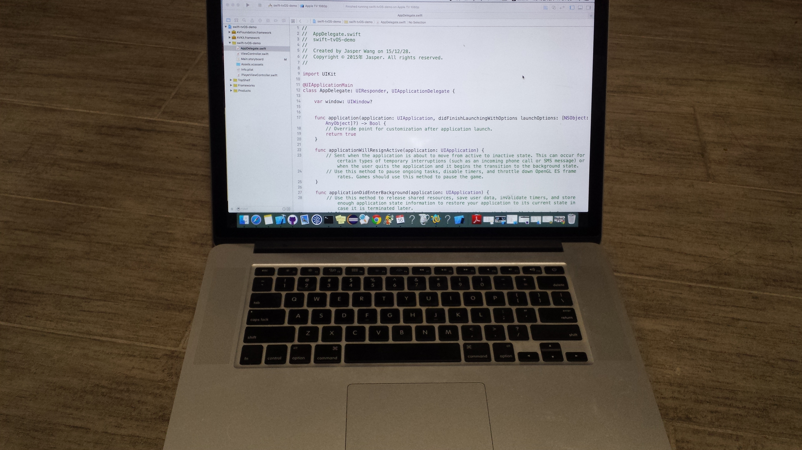
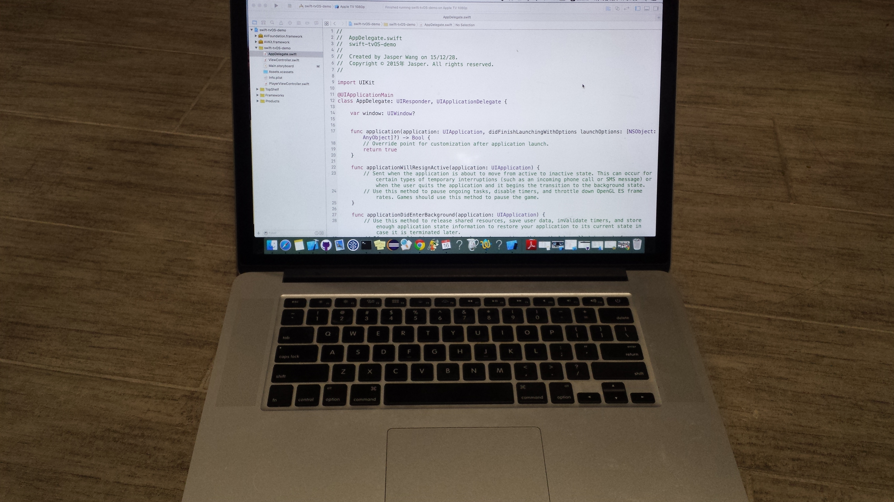
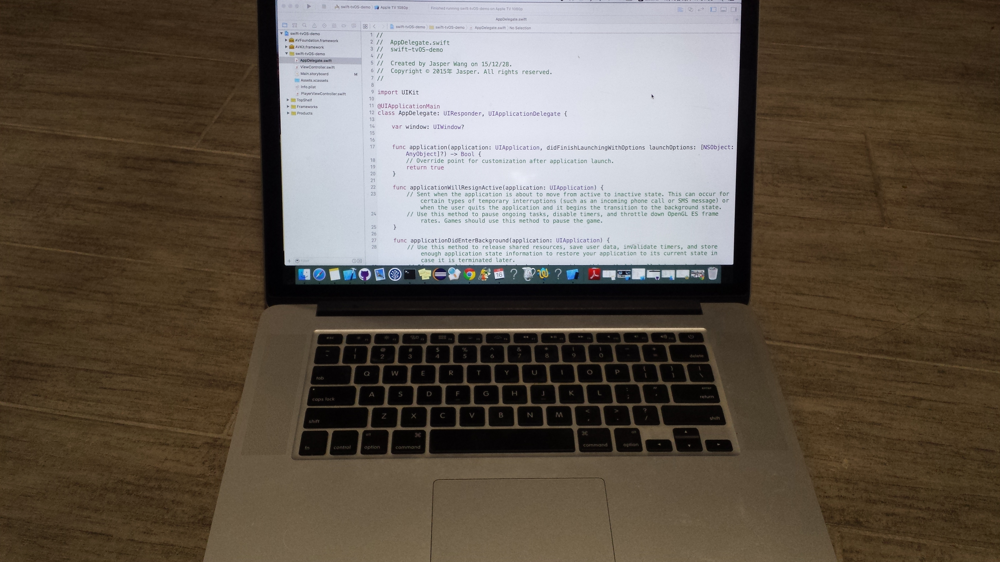
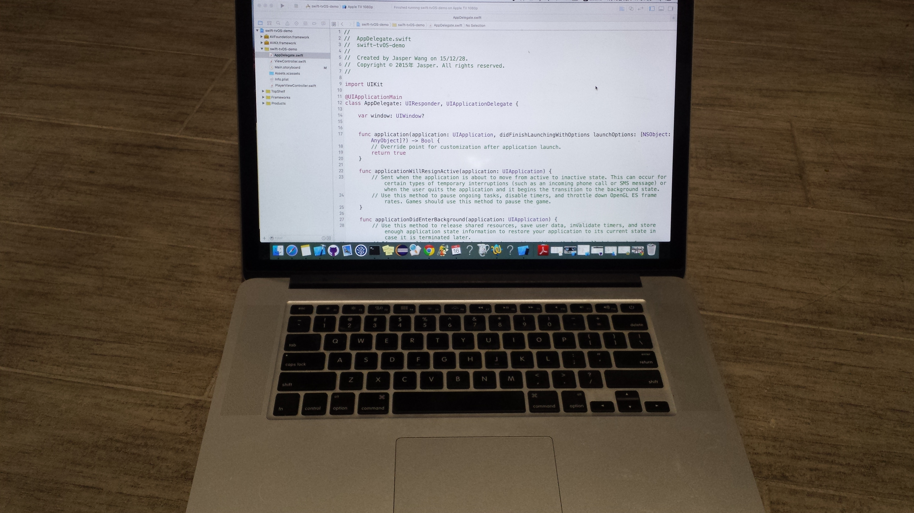

Hello everyone, I am Jasper Wang. Welcome to my personal website!
I am currently a 3rd year student pursuing a degree in Bachelor of Computer Science at the University of Waterloo. During my 2 previous work terms, I had worked as an Application Developer and an IOS Developer respectively. For more information about my work experience, please go to Work experience section.
In the aspect of software development, I am a self-driven geek who loves thinking and solving challenging problems. I have done many personal projects. Since I am very interested in iOS, the majority of my personal projects are related to iOS and tvOS. Besides that, I have 2 years experience in full-stack web application development. For more information with regards to my personal projects, please go to Projects section.
In terms of future plans, since I am crazy about AI, I want to go to AI grad school (machine learning, robotics) in the future. Because of that, I am taking double minors in Cognitive Science as well as Psychology, and I am currently doing a Undergrad Research Assistant under Prof. Jesse Hoey to work on some AI-related projects.
Dec 2015 - present
This is a video-player App on tvOS with different channel selections.
I built this project by integrating AVPlayer framework and Topshelf extension.
Oct 2015 - present
The idea of making a GoogleCast extension was generated from working on integration of Google Cast into my company's project. I found out that many details of implementations for Google Cast are the same for different projects, so it is worth to implement those details to make it a Cocoa-Pod (a type of library in iOS)
This Objective-C Cocoa-Pod can be used on any projects from 'pod install'.
Mar 2015
The calculator written in Swift has memory storage of data. i.e. previous answers (MC, M+, MR)
Auto-layout is enabled on different devices and positions.
Sept 2015 - Dec 2015
I was in charge of maintaining and developing iOS Apps including TSN GO, CTV News, CP24, BNN. Responsibilities include fixing bugs, implementing new server data feed and other features, and deploying the Apps. My work was praised by the clients in terms of both quality and quantity.
In addition, I joined iOS framework team and integrated company’s projects into internal cocoa-pods to be used by Digiflare Inc.’s other projects
Furthermore, with the collaboration of design team, I built a tvOS sample App to demonstrate to the client.
Jan 2015 - Apr 2015
My main role is full-stack web application development.
One project I developed is a facebook-like timeline web application for clients to see clients’ change logs.
The other project is a web application to show graphically the average sql query execution time in different periods and send alert emails to our team whenever execution time of a query exceeds a limit.